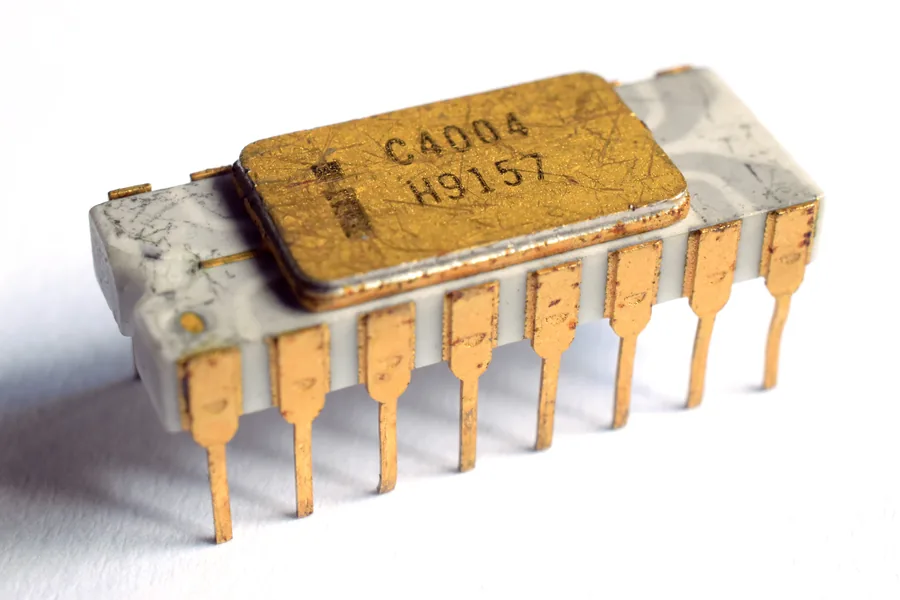
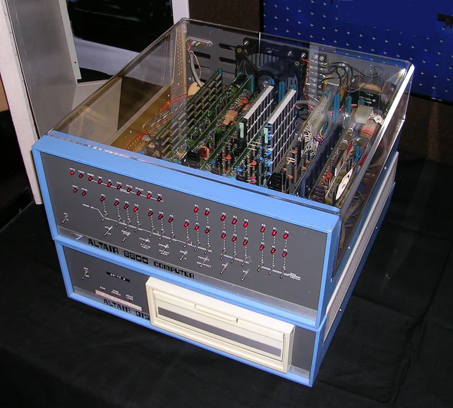
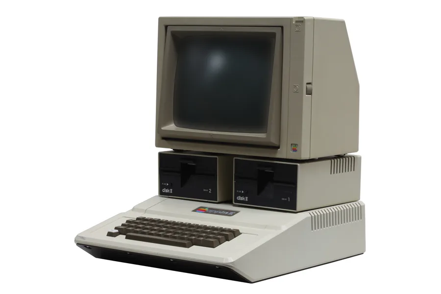
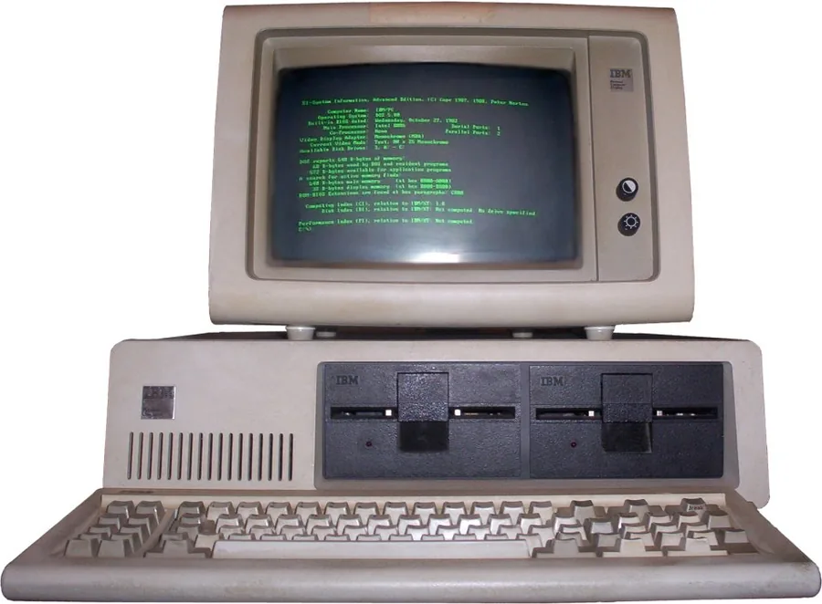

Microprocessadores e computação pessoal
1971 – 1981 · do Intel 4004 ao IBM PC
O computador saiu da empresa e entrou na casa das pessoas. As primeiras máquinas vinham em kit e eram operadas por chaves no painel; depois passaram a ligar direto em um BASIC gravado na ROM. Quem comprava precisava programar para fazer qualquer coisa — é por isso que a atividade desta fase é escrever código.
Dez linhas de BASIC
Ao ligar um micro da época, o BASIC já estava lá, gravado na ROM, com o cursor piscando. Não havia área de trabalho nem ícone: ou você programava, ou a máquina não fazia nada. Escreva e aperte RUN.

O microprocessador: um computador inteiro em um único chip.
Intel 4004 (1971) e 8080 (1974); o MOS 6502 (1975) a apenas 25 dólares, quando os concorrentes custavam cerca de 175; o Zilog Z80; e a arquitetura x86 do 8086/8088. No hardware, Altair 8800 (1975), Apple II e TRS-80 (1977) e o IBM PC de arquitetura aberta (1981). No software, CP/M, MS-DOS e as primeiras aplicações indispensáveis: VisiCalc (1979) e WordStar (1978).
O preço é a história toda. O 6502 custar sete vezes menos que a concorrência foi o que permitiu existir um mercado doméstico.
Barateou o hardware a ponto de criar o usuário comum. A arquitetura aberta do IBM PC gerou os clones compatíveis, e o licenciamento não exclusivo do MS-DOS construiu o domínio da Microsoft: a empresa podia vender o mesmo sistema para todos os fabricantes de clones.
No Xerox PARC nascem a interface WIMP, o mouse e a Ethernet, que só se popularizam na fase seguinte. A ideia certa no lugar errado é um padrão que se repete nesta história.
| Máquina | Ano | Processador | Por que importa |
|---|---|---|---|
|
 Altair 8800 |
1975 | Intel 8080 | Vendido em kit, operado por chaves no painel. Deu origem ao Homebrew Computer Club e motivou a criação da Microsoft. |
|
 Apple II |
1977 | MOS 6502 | Cor, som e slots de expansão. Virou sucesso duradouro em escolas e escritórios. |
| TRS-80 | 1977 | Zilog Z80 | Vendido pela rede Radio Shack; dominou as vendas nos EUA no fim dos anos 70. |
|
 IBM PC (5150) |
1981 | Intel 8088 | Arquitetura aberta. Validou o setor para o mercado corporativo e permitiu os clones "compatíveis IBM". |
- Computer History Museum — "The Silicon Engine" e a linha do tempo anual (1971, 1974, 1975, 1978, 1979, 1981), para as datas do Intel 4004, do Intel 8080, do MOS 6502, do Altair 8800, do Apple II, do TRS-80, do VisiCalc, do WordStar e do IBM PC 5150.
- Intel — timeline oficial e newsroom ("Launching a Classic: The 8080"; "50 Years Ago: Celebrating the Influential Intel 8080"; "The 8086 and the IBM PC"), para as datas e a relação entre o 4004, o 8080 e a arquitetura x86 do 8086/8088.
- IEEE Spectrum — "Chip Hall of Fame", nos verbetes do MOS 6502 e do Zilog Z80, para a origem do 6502 na MOS Technology e do Z80 na Zilog fundada por Federico Faggin, e para o preço de lançamento do 6502 (cerca de 25 dólares contra os 175 dólares do concorrente da época).
- Computer History Museum — seção "Revolution" sobre o Altair 8800 e o Homebrew Computer Club, e National Museum of American History (Smithsonian) — ficha do Altair 8800, para o kit operado por chaves no painel e sua ligação com a fundação do clube e da Microsoft.
- National Museum of American History (Smithsonian) e Computer History Museum — fichas do Apple II e do TRS-80, para o processador de cada máquina (MOS 6502 e Zilog Z80), os recursos do Apple II (cor, som, slots de expansão) e a venda do TRS-80 pela rede Radio Shack.
- IBM — página oficial "The IBM PC" (ibm.com/history) e Computer History Museum, para o IBM PC 5150 (1981), o processador Intel 8088 e a arquitetura aberta que permitiu os clones.
- Computer History Museum — acervo e blog sobre o código-fonte do CP/M e as memórias de Gary Kildall, para a criação do CP/M e a fundação da Digital Research.
- Reportagens especializadas sobre a história do licenciamento do MS-DOS (cobrindo o acordo da Microsoft com a IBM em 1980-81) e o acervo do Computer History Museum sobre o código-fonte do MS-DOS, para o licenciamento não exclusivo que permitiu à Microsoft vender o mesmo sistema a múltiplos fabricantes de clones.
- Engineering and Technology History Wiki (ETHW) — marco IEEE do Ethernet, para a criação da rede por Robert Metcalfe em 1973 no Xerox PARC, junto ao Xerox Alto (primeira máquina fabricada com mouse e interface de janelas, ícones e menus) documentado pelo Computer History Museum.
- Datas de vida das pessoas citadas conferidas no Wikidata; crédito das fotos na página de créditos.
- Não existe foto de Gary Kildall com licença livre no Wikimedia Commons, por isso ele aparece sem retrato.